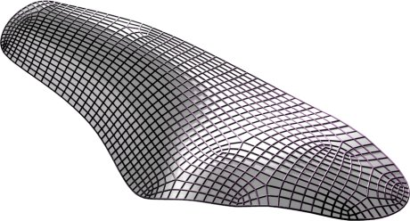

Discrete Surfaces in Isotropic Geometry |
||
You can visualize the 3D models by clicking the picture. The 3D model is rendered by JavaView. By right clicking the window and choosing "control panel", you can export the model from File Menu. |
||
Bonnet surface |
hyperbolic parabolic surface? |
Ennerper surface |
Logarithmic quadrilateral surface |
Logarithmic hexagonal surface |
Dual Bonnet surface |
Dual Ennerper surface |
Isotropic conical mesh |
|
Conjugate Bonnet surface in architecture |
||
?
Special thanks to Heinz Schmiedhofer who prepared most figures.
Updated on March 26, 2007